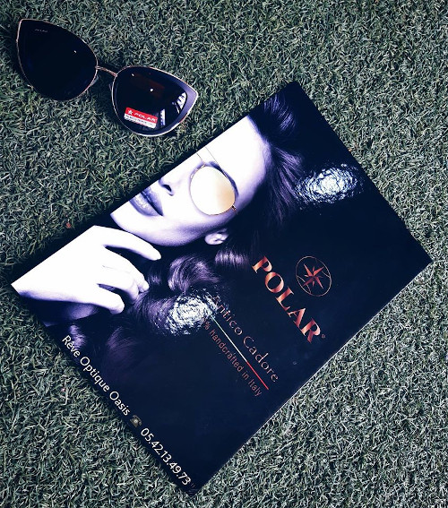
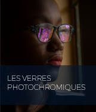
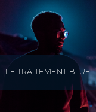
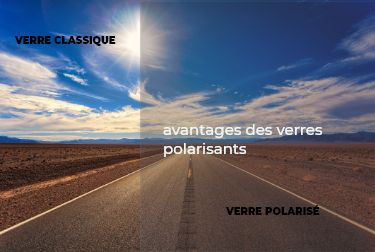
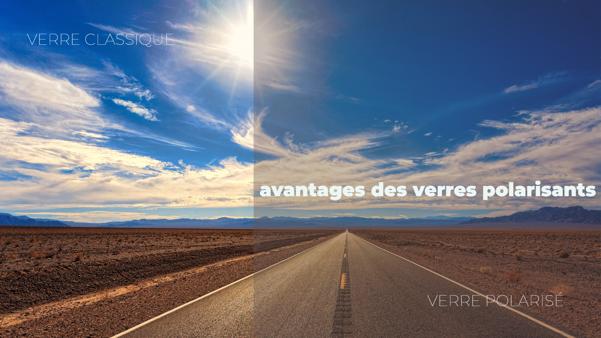

Besoin de conseils professionnels et personnalisés pour votre vue?
Disponibilité, honnêteté et écoute sont les maîtres mots de notre équipe qui vous accompagne dans vos démarches avec un grand professionnalisme.
Rêve Optique Oasis vous accueillir dans un environnement où l’esprit de service et l’ambiance amicale règnent.
MEILLEURS VENTES
Polar
Met en avant son expertise et son innovation pour proposer
des lunettes de vue stylées, de bonne qualité et abordables. Les nombreuses formes
et coloris disponibles vous permettront d’exprimer votre personnalité et
vous accompagneront quelles que soient vos activités.

POURQUOI CHOISIR UN VERRE POLARI...
À la recherche d’une paire de lunettes de soleil pour l’été?...


LE TRAITEMENT BLUE
Les verres Blue Cut ont été développés pour protéger les yeux des effets néfastes de la lumière
bleue en bloquant les rayons correspondants à cette partie de la lumière visible.
Il permet :
-De réduire l’éblouissement et la fatigue oculaire provoqués par ces rayonnements qui sont de plus
en plus présents dans notre environnement technologique actuel (écrans numériques, éclairages …)
-D’améliorer le contraste et l’acuité visuelle,
-De protéger les structures oculaires telles que le cristallin ou la rétine des effets nocifs dus à ces
rayonnements.
LES VERRES PHOTOCHROMIQUES
Les verres BlueActiv® 420 sont des verres photochromiques qui ont la caratéristique, en dehors de bloquer
100% des rayons UVA et UVB, de filtrer la lumière bleue nocive
Disponibles en 2 teintes : Brun et Gris.
Les verres Chromactiv™ photochromiques sans compromis réagissent rapidement aux changements de
luminosité.
FLASH FASHION
FLASH FASHION activated by Transitions®, est un verre photochromique doté d’un traitement spécifique
lui permettant de passer d’un léger Flash à un effet miroir lorsque le verre se teinte.
Ce traitement est activé par la technologie Transitions® XTRActive™.
Les verres Flash Fashion bloquent 100% des rayons UVA et UVB.
NUPOLAR®L’ART ET LA SCIENCE DES VERRES NUPOLAR®
lunette nouvelle géneration


Le « film fin », le must de la technologie avancée !
Une technologie unique, celle du « film fin » intégré dans le verre blanc. Bien plus que de simples lunettes
de soleil, les verres polarisants Nupolar® n’ont rien de conventionnel et sont le résultat d’avancées
technologiques majeures.
est une anomalie de la vision affectant la perception des couleurs.
D'origine généralement génétique elle a alors pour cause une déficience d'un ou
plusieurs des trois types de cônes de la rétine oculaire.
Comment les daltoniens voient?
Causes
La rétine, une membrane tapissant le fond de l'œil,
est sensible à la lumière et aux couleurs. Elle possède des cellules spécialisées, appelées cônes, qui sont sensibles aux couleurs.
Il existe 3 types de cônes. L'un distingue le rouge, l'autre le vert et le dernier le bleu. Quand un type de cônes ne fonctionne pas normalement,
la couleur à laquelle le cône réagit est difficile à distinguer.
Par exemple, une personne ne pouvant pas distinguer le rouge présente une anomalie des cônes correspondant à cette couleur.